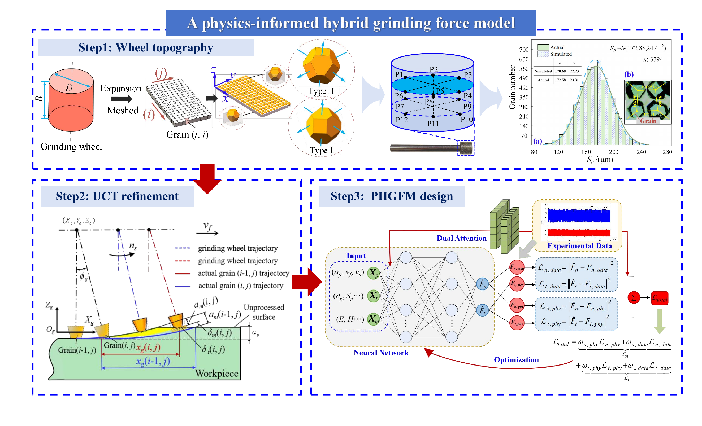
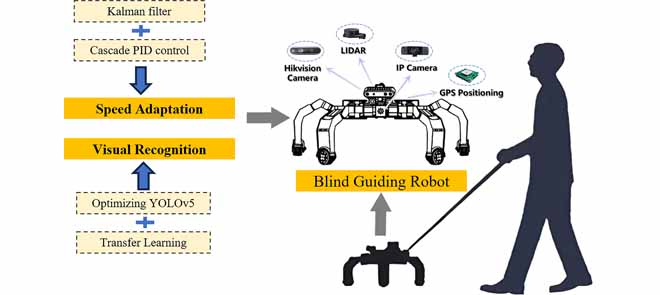
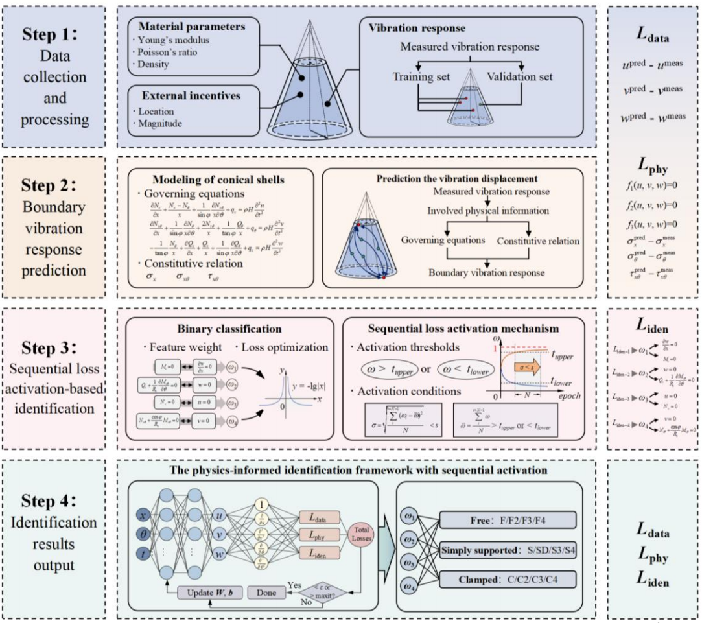
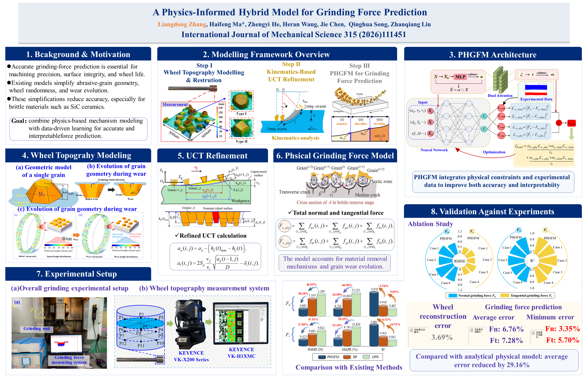
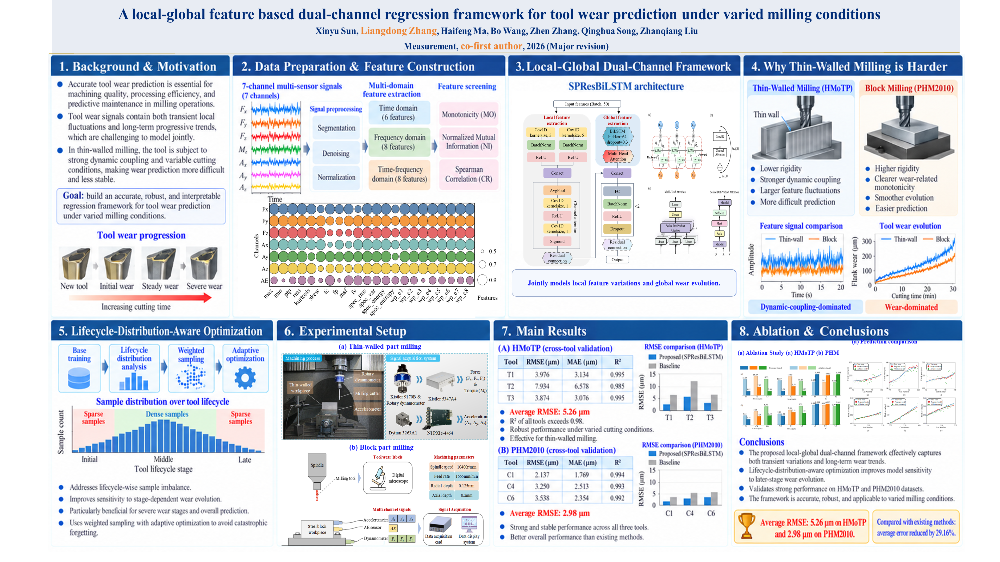

WELCOME TO MY ACADEMIC HOMEPAGE
Prospective PhD Applicant for Fall 2027
我是张良栋，计划申请 2027 年秋季入学的博士项目。我的研究兴趣集中于物理信息深度学习、物理—数据混合驱动建模、加工动力学及多源信息融合监测。目前，我在山东大学攻读机械工程硕士学位，师从马海峰教授，预计于 2027 年毕业。硕士阶段曾获国家奖学金（前 3%）、学院先进成果奖（年级第 1 名）及山东大学研究生一等学业奖学金。
2篇已发表论文均为第一作者 · IF 11.4 / 4.2
2篇在修论文
4项发明专利
5项国家级奖项
30+项省级奖项
01
论文成果
PUBLICATIONS
Design of Blind Guiding Robot Based on Speed Adaptation and Visual Recognition
IEEE Access, 2023 · JCR Q2 · CAS Q3 · IF 4.2
TOOL WEAR PREDICTIONLocal–Global FeaturesDual-Channel Regression
A local-global feature based dual-channel regression framework for tool wear prediction under varied milling conditions
Measurement, 2026 · JCR Q1 · CAS Q2 · IF 6.1
† 共同一作 · Co-first authors大修 · Major Revision

Boundary conditions identification of conical shells using dynamic loss triggered physics-informed neural networks
Mechanical Systems and Signal Processing, 2026 · JCR Q1 · CAS Q1 Top · IF 10.2
大修 · Major Revision
02
发明专利
PATENTS一种基于物理信息混合建模的磨削力预测方法及系统
CN121580861A · 马海涛，张良栋，陈俊杰，宋清华，刘战强
一种自动装卸立体仓储系统及其工作方法
CN202411715157.2 · 万熠，郑凯，刘洋，刘硕，张良栋，等
一种可拼接式 AGV 运输底盘及其工作方法
CN202510103872.9 · 万熠，刘洋，侯俊，郑凯，沈文，张良栋，等
一种持续供电与防坠落的高空壁面清洁系统及其应用
CN202211449890.5 · 杨扬，解博文，曾庆良，刘永宾，张瑶，杜顺义，荀琪凯，陈世栋，张良栋
03
科研经历
RESEARCH EXPERIENCE多源振动信号驱动的自适应磨削颤振稳定性监测
山东省重点研发计划 · 研究生科研成员
- 结合 VMD 特征分解、动态频带追踪与在线决策边界更新，开发磨削颤振稳定性监测方法。
- 开展多源振动信号感知、融合与因果分析，揭示颤振传播路径。
薄壁陶瓷构件高稳定性磨削控制研究
山东省重点研发计划 · 研究生科研成员
- 融合砂轮形貌、磨粒磨损、未变形切屑厚度及多阶段材料去除机理，建立物理信息磨削力模型。
- 构建混合物理—数据损失和双注意力机制 PINN 框架。

变工况铣削刀具磨损预测研究
山东省重点研发计划 · 研究助理 · 导师：马海峰教授
- 提出融合多尺度卷积、BiLSTM 与多头注意力的双通道回归框架，联合建模局部磨损波动与长期磨损演化。
- 基于加权采样构建面向刀具全生命周期的优化策略，提升预测稳定性及模型对磨损后期的敏感性。
- 在 HMoTP 和 PHM2010 数据集上的平均 RMSE 分别为 5.26 μm 和 2.98 μm，相较现有模型预测误差降低约 34.3%。

基于速度适应与视觉识别的智能导盲机器人
国家级大学生创新创业训练计划 · 本科生科研成员
- 设计轮足式导盲机器人系统，基于卡尔曼滤波与串级 PID 实现人机速度自适应控制。
- 利用迁移学习优化 YOLOv5 视觉识别模块，实现交通信号检测与多模态人机交互。
高层玻璃幕墙智能清洁机器人
国家级大学生创新创业训练计划 · 本科生科研成员
- 设计太阳能高空清洁机器人，集成负压吸附、阻尼滚筒清洁与防坠保护机构。
- 融合双目相机与激光传感器，实现表面分类、清洁区域定位及自主决策。
04
活动与荣誉
ACTIVITIES & AWARDSNational-Level Awards 国家级奖项
Chinese National Scholarship (Top 3%)
National First Prize, the 21st “RoboMaster” National University Robot Competition (Top 5%)
National First Prize, the 2023 Chinese College Students' Mechanical Engineering Innovation and Creativity Competition (Top 8%)
National First Prize, Sentry Robot Practical Competition, National University Robot Competition
National First Prize, Hero Robot Practical Competition, National University Robot Competition
Provincial-Level Awards & Scholarships 省级奖项与奖学金
Provincial Grand Prize, the 18th National 3D Digital Innovation Design Competition (Top 3%)
Provincial First Prize, the 18th “Challenge Cup” Shandong Provincial College Students’ Extracurricular Academic Science and Technology Works Competition
Provincial First Prize, the 6th Shandong Provincial Intelligent Control Competition
First Prize (4th Place), Eastern Division, RoboMaster University Championship
First Prize, the 6th Shandong Provincial Intelligent Control Competition
First Prize, Shandong Provincial College Student Intelligent Manufacturing Competition
First Prize, Shandong Provincial Electromechanical Product Innovation Design Competition
Second Prize, National University Business Elite Challenge - Shandong Division
Second Prize, Shandong Provincial College Student Advanced Engineering Drawing Technology and Product Information Modeling Competition
Second Prize, Shandong Provincial Advanced Engineering Drawing Competition
Second Prize, 9th Shandong Provincial College Student Science and Technology Innovation Competition
Third Prize, Shandong Provincial Efficient and Intelligent Robot Innovation Competition
Third Prize, Shandong Provincial Maker Competition
Hairong Corporate Scholarship (Top 5%)
First-Class Academic Scholarship, Shandong University of Science and Technology (Top 5%)
欢迎就研究、合作与学术交流与我联系。
liangdongzhangme@outlook.com →